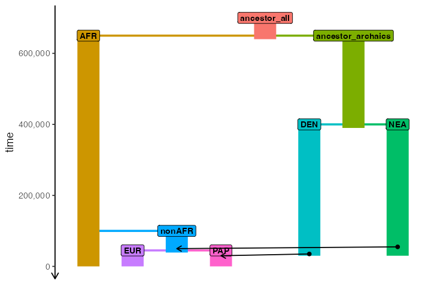
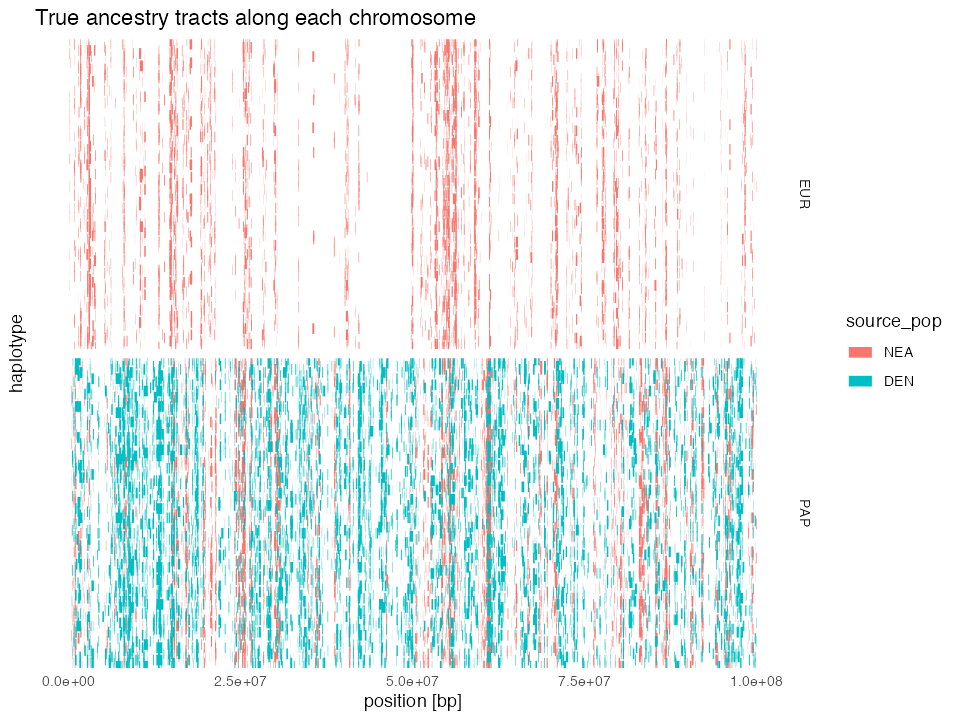

Please note that the tspop support in
slendr implemented in the ts_tracts() function is
extremely experimental, only minimally tested, and its functionality is
expected to change quite a bit. Please wait for the release of the next
major version of slendr (which should include a more developed
ts_tracts()) before you use this in your own
work.
slendr now includes an experimental, use-it-at-your-own-risk interface to an exciting new algorithm for extracting true tracts of ancestry as implemented in the Python module tspop.
The interface is implemented in an R function
ts_tracts() and this vignette describes its use on a simple
toy model of Neanderthal and Denisovan introgression into modern
humans.
Demographic model
Let’s imagine the following demographic model of Neanderthal introgression into the ancestors of all non-Africans (represented by “EUR” and “PAP” populations, approximating European and Papuan people living today), followed by Denisovan introgression into the ancestors of Papuans:
anc_all <- population("ancestor_all", time = 700e3, N = 10000, remove = 640e3)
afr <- population("AFR", parent = anc_all, time = 650e3, N = 10000)
anc_arch <- population("ancestor_archaics", parent = anc_all, time = 650e3, N = 10000, remove = 390e3)
nea <- population("NEA", parent = anc_arch, time = 400e3, N = 2000, remove = 30e3)
den <- population("DEN", parent = anc_arch, time = 400e3, N = 2000, remove = 30e3)
nonafr <- population("nonAFR", parent = afr, time = 100e3, N = 3000, remove = 39e3)
eur <- population("EUR", parent = nonafr, time = 45e3, N = 5000)
pap <- population("PAP", parent = nonafr, time = 45e3, N = 5000)
gf <- list(
gene_flow(from = nea, to = nonafr, rate = 0.03, start = 55000, end = 50000),
gene_flow(from = den, to = pap, rate = 0.07, start = 35000, end = 30000)
)
model <- compile_model(
populations = list(anc_all, afr, anc_arch, nea, den, nonafr, eur, pap),
gene_flow = gf,
generation_time = 30,
serialize = FALSE
)
plot_model(
model, sizes = FALSE,
order = c("AFR", "EUR", "nonAFR", "PAP", "ancestor_all", "DEN", "ancestor_archaics", "NEA")
)
Tree sequence simulation
Let’s now simulate a 50Mb tree sequence from this model, recording 50 diploid individuals from EUR and PAP populations:
samples <- schedule_sampling(model, times = 0, list(eur, 50), list(pap, 50))
ts <- msprime(model, sequence_length = 100e6, recombination_rate = 1e-8, samples = samples, random_seed = 42)Extracting ancestry tracts
In order to extract tracts of Neanderthal and Denisovan ancestry, we
can use slendr’s new function ts_tracts() which
serves as a simplified R-friendly interface to the Python method tspop.get_pop_ancestry().
An important piece of information used by the function is a so-called
“census time”, which records the time of recording of the “ancestral
population” identity of each node ancestral to each subsegment in our
sample set. Please see the excellent vignette of
tspop for more information on the inner workings of the
algorithm.
In our case, let’s extract the ancestry tracts corresponding to ancestral nodes present at 55 thousand years ago – this time corresponds to the moment of the start of the archaic introgression:
nea_tracts <- ts_tracts(ts, census = 55000)
#>
#> PopAncestry summary
#> Number of ancestral populations: 3
#> Number of sample chromosomes: 200
#> Number of ancestors: 44052
#> Total length of genomes: 20000000000.000000
#> Ancestral coverage: 20000000000.000000
den_tracts <- ts_tracts(ts, census = 35000)
#>
#> PopAncestry summary
#> Number of ancestral populations: 3
#> Number of sample chromosomes: 200
#> Number of ancestors: 55373
#> Total length of genomes: 20000000000.000000
#> Ancestral coverage: 20000000000.000000
tracts <- bind_rows(nea_tracts, den_tracts)This is what a table with all ancestry tracts looks like. As we would expect, we see a column indicating a name of each individual, the left and right coordinates of each tract in each individual, as well as the population name of the source of each ancestry tract:
tracts
#> # A tibble: 17,002 × 8
#> name node_id pop source_pop left right length source_pop_id
#> <chr> <dbl> <fct> <fct> <dbl> <dbl> <dbl> <dbl>
#> 1 EUR_1 0 EUR NEA 781887 852668 70781 3
#> 2 EUR_1 0 EUR NEA 1451389 1463837 12448 3
#> 3 EUR_1 0 EUR NEA 1596995 1601441 4446 3
#> 4 EUR_1 0 EUR NEA 1629857 1689656 59799 3
#> 5 EUR_1 0 EUR NEA 3203711 3339565 135854 3
#> 6 EUR_1 0 EUR NEA 3850629 3947923 97294 3
#> 7 EUR_1 0 EUR NEA 6190700 6205627 14927 3
#> 8 EUR_1 0 EUR NEA 10394211 10426667 32456 3
#> 9 EUR_1 0 EUR NEA 13044685 13180258 135573 3
#> 10 EUR_1 0 EUR NEA 14858956 14912068 53112 3
#> # ℹ 16,992 more rowsSummaries of ancestral proportions
When we summarise the ancestry proportions in target EUR and PAP populations, we see that the EUR population only carries about ~3% of Neanderthal ancestry and that this is also true for the PAP population. However, we also see that Papuans carry about 7% of Denisovan ancestry. This is consistent with our model, but also with the expectation from empirical data.
summary <- tracts %>%
group_by(name, node_id, pop, source_pop) %>%
summarise(prop = sum(length) / 100e6)
#> `summarise()` has grouped output by 'name', 'node_id', 'pop'. You can override
#> using the `.groups` argument.
summary %>% group_by(pop, source_pop) %>% summarise(mean(prop)) %>% arrange(source_pop, pop)
#> `summarise()` has grouped output by 'pop'. You can override using the `.groups`
#> argument.
#> # A tibble: 3 × 3
#> # Groups: pop [2]
#> pop source_pop `mean(prop)`
#> <fct> <fct> <dbl>
#> 1 EUR NEA 0.0303
#> 2 PAP NEA 0.0348
#> 3 PAP DEN 0.0739Let’s visualize these proportions at an individual level:
summary %>%
ggplot(aes(source_pop, prop, color = source_pop, fill = source_pop)) +
geom_jitter() +
coord_cartesian(ylim = c(0, 0.2)) +
geom_hline(yintercept = c(0.03, 0.08), linetype = 2) +
ylab("ancestry proportion") +
facet_wrap(~ pop) +
ggtitle("Ancestry proportions in each individual",
"(vertical lines represent 3% and 7% baseline expectations")
“Chromosome painting” of ancestry tracts
Because the tracts object contains the coordinates of
every single ancestry segment in each of the simulated individuals, we
can “paint” each chromosome with each of the two archaic human
ancestries:
tracts %>%
mutate(chrom = paste(name, " (node", node_id, ")")) %>%
ggplot(aes(x = left, xend = right, y = chrom, yend = chrom, color = source_pop)) +
geom_segment(linewidth = 3) +
theme_minimal() +
labs(x = "position [bp]", y = "haplotype") +
ggtitle("True ancestry tracts along each chromosome") +
theme(axis.text.y = element_blank(), panel.grid = element_blank()) +
facet_grid(pop ~ ., scales = "free_y")
By lining up NEA & DEN ancestry tracts in both EUR and PAP populations, we can see how the common origin of Neanderthal ancestry in both non-African populations manifests in a significant overlap of NEA tracts between both populations.
Average tract lengths:
Let’s compute simple summaries of tract lengths in the simulated data, and compare them to theoretical expectations.
tracts %>%
group_by(pop, source_pop) %>%
summarise(mean(length))
#> `summarise()` has grouped output by 'pop'. You can override using the `.groups`
#> argument.
#> # A tibble: 3 × 3
#> # Groups: pop [2]
#> pop source_pop `mean(length)`
#> <fct> <fct> <dbl>
#> 1 EUR NEA 65765.
#> 2 PAP NEA 69204.
#> 3 PAP DEN 100317.Theoretical expectations (from Racimo and Slatkin 2015, Box 1)
- Neanderthal tracts:
m <- 0.03
t <- 52500 / 30
r <- 1e-8
mean_nea <- 1 / ((1 - m) * r * (t - 1))
mean_nea
#> [1] 58943.84- Denisovan tracts:
m <- 0.07
t <- 37500 / 30
r <- 1e-8
mean_den <- 1 / ((1 - m) * r * (t - 1))
mean_den
#> [1] 86090.38As we can see, our simulations are not that far of from the theoretical expectations, giving us confidence that our simulations (and the ancestry tract extraction algorithm) are working as expected.
Distribution of ancestry tract lengths
Finally, let’s plot the distributions of lengths of each of the ancestry tracts. The case of archaic human introgression is very well studied so it’s perhaps not that exciting to look at these figures. That said, in less well studied species, it might be interesting to use these kinds of simulations for inference of introgression times and proportions via Approximate Bayesian Computation or by another method:
expectation_df <- data.frame(
pop = c("EUR", "PAP", "PAP"),
source_pop = c("NEA", "NEA", "DEN"),
length = c(mean_nea, mean_nea, mean_den)
)
p_densities <- tracts %>%
ggplot(aes(length, color = source_pop)) +
geom_density() +
geom_vline(data = expectation_df, aes(xintercept = length, color = source_pop),
linetype = 2) +
facet_wrap(~ pop) +
ggtitle("Distribution of tract lengths per different ancestries")
cowplot::plot_grid(p_densities, p_densities + scale_x_log10(), nrow = 2)Pure msprime tree sequence
Finally, as a sanity check, let’s use the pure msprime
simulation example from the official
tspop documentation to test that ts_tracts()
behaves as expected even on a standard msprime tree-sequence
object.
First, let’s run the simulation code exactly as it is:
import msprime
pop_size = 500
sequence_length = 1e7
seed = 98765
rho = 3e-8
# Make the Demography object.
demography = msprime.Demography()
demography.add_population(name="RED", initial_size=pop_size)
#> Population(initial_size=500, growth_rate=0, name='RED', description='', extra_metadata={}, default_sampling_time=None, initially_active=None, id=0)
demography.add_population(name="BLUE", initial_size=pop_size)
#> Population(initial_size=500, growth_rate=0, name='BLUE', description='', extra_metadata={}, default_sampling_time=None, initially_active=None, id=1)
demography.add_population(name="ADMIX", initial_size=pop_size)
#> Population(initial_size=500, growth_rate=0, name='ADMIX', description='', extra_metadata={}, default_sampling_time=None, initially_active=None, id=2)
demography.add_population(name="ANC", initial_size=pop_size)
#> Population(initial_size=500, growth_rate=0, name='ANC', description='', extra_metadata={}, default_sampling_time=None, initially_active=None, id=3)
demography.add_admixture(
time=100, derived="ADMIX", ancestral=["RED", "BLUE"], proportions=[0.5, 0.5]
)
#> Admixture(time=100, derived='ADMIX', ancestral=['RED', 'BLUE'], proportions=[0.5, 0.5])
demography.add_census(time=100.01) # Census is here!
#> CensusEvent(time=100.01)
demography.add_population_split(
time=1000, derived=["RED", "BLUE"], ancestral="ANC"
)
#> PopulationSplit(time=1000, derived=['RED', 'BLUE'], ancestral='ANC')
# Simulate.
ts = msprime.sim_ancestry(
samples={"RED": 0, "BLUE": 0, "ADMIX" : 2},
demography=demography,
random_seed=seed,
sequence_length=sequence_length,
recombination_rate=rho
)Let’s save the msprime tree sequence to disk so that we can
load it into R (i.e., approximating what you might want to do should you
want to use ts_tracts() without running a slendr
simulation first):
ts.dump("/tmp/sim.trees")Now let’s move to R again, load the tree sequence into
slendr and extract ancestry tracts from it using
ts_tracts():
sim_ts <- ts_load("/tmp/sim.trees")
squashed_tracts <- ts_tracts(sim_ts, census = 100.01, squashed = TRUE)
#>
#> PopAncestry summary
#> Number of ancestral populations: 2
#> Number of sample chromosomes: 4
#> Number of ancestors: 118
#> Total length of genomes: 40000000.000000
#> Ancestral coverage: 40000000.000000
head(squashed_tracts)
#> # A tibble: 6 × 4
#> sample left right population
#> <dbl> <dbl> <dbl> <dbl>
#> 1 0 0 419848 0
#> 2 0 419848 483009 1
#> 3 0 483009 1475765 0
#> 4 0 1475765 2427904 1
#> 5 0 2427904 3635390 0
#> 6 0 3635390 4606954 1
tail(squashed_tracts)
#> # A tibble: 6 × 4
#> sample left right population
#> <dbl> <dbl> <dbl> <dbl>
#> 1 3 7134130 7362300 1
#> 2 3 7362300 7369409 0
#> 3 3 7369409 7596783 1
#> 4 3 7596783 8289015 0
#> 5 3 8289015 8918727 1
#> 6 3 8918727 10000000 0By setting squashed = FALSE, we get the full,
un-squashed ancestry segments, each with its appropriate ancestral node
ID:
full_tracts <- ts_tracts(sim_ts, census = 100.01, squashed = FALSE)
#>
#> PopAncestry summary
#> Number of ancestral populations: 2
#> Number of sample chromosomes: 4
#> Number of ancestors: 118
#> Total length of genomes: 40000000.000000
#> Ancestral coverage: 40000000.000000
head(full_tracts)
#> # A tibble: 6 × 5
#> sample left right ancestor population
#> <int> <dbl> <dbl> <int> <int>
#> 1 0 0 33027 74 0
#> 2 0 33027 155453 33 0
#> 3 0 155453 290542 46 0
#> 4 0 290542 419848 18 0
#> 5 0 419848 483009 83 1
#> 6 0 483009 1475765 28 0
tail(full_tracts)
#> # A tibble: 6 × 5
#> sample left right ancestor population
#> <int> <dbl> <dbl> <int> <int>
#> 1 3 8477625 8672850 94 1
#> 2 3 8672850 8849756 95 1
#> 3 3 8849756 8918727 131 1
#> 4 3 8918727 9165035 44 0
#> 5 3 9165035 9176562 47 0
#> 6 3 9176562 10000000 58 0By comparing the two tables above to the pandas data frames in the tspop documentation, we can see that we obtained the same results.